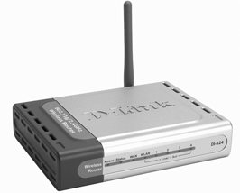

Para llevar hasta el extremo la idea de la movilidad en los terminales de red, sólo había que desligarlos de la conexión con cable. Esto ha llevado a que muchos dispositivos portátiles dispongan de sistemas receptores emisores que utilizan la tecnología inalámbrica y crear los enlaces adecuados para las redes LAN inalámbricas o WLAN.
ACCESO A INTERNET INALÁMBRICOes la abreviatura deLAN inalámbrico( 'Red local inalámbrica').
Una WLAN (red local inalámbrica) es una extensión de una red cableada estándar LAN y complementaria de ésta y que en determinados contextos puede llegar a ser una alternativa.
Algunas ventajas de las redes WLAN son los siguientes:
-
Flexibilidad en cuanto a ubicación de los terminales.
-
Movilidad de los terminales sin perjuicio de la conectividad.
-
Ahorro en la instalación, al suprimir el cableado para los terminales, junto con el abaratamiento progresivo del material de conectividad inalámbrica.
-
Facilidad de instalación.
-
Aumento del acceso; con las redes inalámbricas se puede llegar a lugares donde es difícil o costoso de llegar con sistemas cableados.
Los sistemas basados en la radio son los que permiten el concepto de las redes inalámbricas.
En la implementación de las redes inalámbricas, para que un terminal de red se pueda conectar al resto de la red, es necesario que haya un dispositivo que conecte esta red con los terminales; este dispositivo se llama punto de acceso, que no es otra cosa que un dispositivo que, conectado a la red, distribuye por difusión la señal de radio (figura).
Los puntos de acceso tienen un alcance limitado; por tanto, para cubrir una determinada área es posible que sea necesario más de un punto de acceso.
- 
- Punto de acceso
Esta tecnología también se utiliza para conectar como troncales dos edificios vecinos o más. La norma más utilizada por las redes inalámbricas es la norma IEEE 802.11 en las revisiones a, b, g y n. Esta norma propició una alianza de compañías que se llamó "alianza Wi-Fi" conocida ampliamente como Wi-Fi (wireless fidelity). Actualmente es la técnica más extendida en el uso de las redes locales inalámbricas. La norma 802.11a es un estándar que funciona en un rango de frecuencias de 5 GHz a una velocidad de datos máxima de 54 Mb / s. La norma 802.11b funciona en el rango de 2,4 GHz con una velocidad de 11 Mb / s.
El alcance de un punto de acceso Wi-Fi puede llegar hasta los 300 metros, pero las paredes, las interferencias y la disposición de los equipos hacen que el alcance con un rendimiento aceptable llegue a los 100 metros.
Recuerde que la atenuación es proporcional al cubo de la distancia
Hay, sin embargo, otro tipo de redes inalámbricas de alcance corto, las llamadas redes de área personal (PAN, personal area network) en la que se pretende facilitar las comunicaciones entre equipos fijos y móviles, tales como ordenadores portátiles, teléfonos móviles, ordenadores de bolsillo (PDA) y otros dispositivos similares, sin utilizar cables.
PDAes la abreviatura deasistente de datos personales(Ordenador de bolsillo).
En torno a esta tecnología en los que no hay un punto de acceso, dado que cada dispositivo se conecta con otros directamente con una relación entre iguales (peer-to-peer), se crean pequeñas redes inalámbricas que permiten, por ejemplo, la sincronización de datos entre dispositivos (figura).

Aunque para este tipo de redes también se utiliza la comunicación infrarroja, la tecnología más utilizada en estas redes personales es la llamada Bluetooth, que es una especificación abierta de la industria en la que hay bastantes compañías implicadas, actualmente bajo el estándar 802.15, y que define tres clases de potencia, de la que depende el alcance de este tipo de dispositivos. Así, el de la clase 1, el menos potente, de 1 mW, abarca hasta un metro; el de clase 2, de 2,5 mW, hasta 10 metros; y el de la clase 3, de 100 mW, puede llegar hasta los 100 metros pero con un aumento considerable del consumo. Bluetooth trabaja a 2,45 GHz y la velocidad máxima de transmisión es de 1 Mb / s, aunque en la versión 2 puede llegar hasta 3 Mb / s.